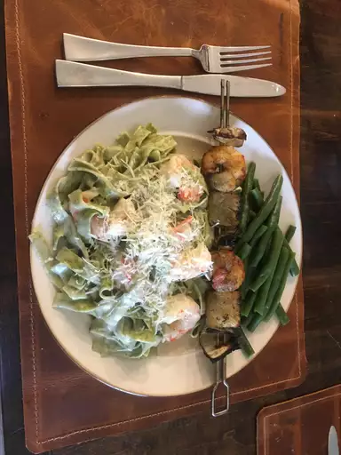

White sauce pasta

I came up with this white spaghetti sauce recipe one night to serve with dried pasta and spicy battered shrimp. My husband lived in Italy for three years, so he's really picky about his Italian cuisine. He loved this sauce and thought I spent all day on dinner. It is really hard to mess up this kind of white sauce. In my opinion, it's similar to Alfredo sauce but without cheese.
Ingredients
- 1/4 cup butter
- 1/4 cup all-purpose flour
- 1/2 teaspoon salt
- 2 cups milk
- 1/4 teaspoon ground black pepper
- 1/4 teaspoon ground nutmeg
- 1/4 cup grated Parmesan cheese
- 1/4 cup chopped fresh parsley
- 1 pound spaghetti
Steps
- Melt butter in a medium saucepan over medium low heat. Add flour and salt and stir until smooth.
- Slowly whisk in milk, about 1/2 cup at a time, until smooth. Stir in pepper and nutmeg. Bring to a boil, then reduce heat to low. Simmer 5 minutes, stirring constantly.
- Remove from heat and stir in Parmesan cheese and parsley. Serve over cooked pasta.